Last updated: 2022-06-20
Checks: 7 0
Knit directory:
Genetic-diversity-and-interaction-between-the-maintainers-of-commercial-Soybean-cultivars-using-self/
This reproducible R Markdown analysis was created with workflowr (version 1.7.0). The Checks tab describes the reproducibility checks that were applied when the results were created. The Past versions tab lists the development history.
Great! Since the R Markdown file has been committed to the Git repository, you know the exact version of the code that produced these results.
Great job! The global environment was empty. Objects defined in the global environment can affect the analysis in your R Markdown file in unknown ways. For reproduciblity it’s best to always run the code in an empty environment.
The command set.seed(20220620) was run prior to running
the code in the R Markdown file. Setting a seed ensures that any results
that rely on randomness, e.g. subsampling or permutations, are
reproducible.
Great job! Recording the operating system, R version, and package versions is critical for reproducibility.
Nice! There were no cached chunks for this analysis, so you can be confident that you successfully produced the results during this run.
Great job! Using relative paths to the files within your workflowr project makes it easier to run your code on other machines.
Great! You are using Git for version control. Tracking code development and connecting the code version to the results is critical for reproducibility.
The results in this page were generated with repository version db34b13. See the Past versions tab to see a history of the changes made to the R Markdown and HTML files.
Note that you need to be careful to ensure that all relevant files for
the analysis have been committed to Git prior to generating the results
(you can use wflow_publish or
wflow_git_commit). workflowr only checks the R Markdown
file, but you know if there are other scripts or data files that it
depends on. Below is the status of the Git repository when the results
were generated:
Ignored files:
Ignored: .Rproj.user/
Note that any generated files, e.g. HTML, png, CSS, etc., are not included in this status report because it is ok for generated content to have uncommitted changes.
These are the previous versions of the repository in which changes were
made to the R Markdown (analysis/index.Rmd) and HTML
(docs/index.html) files. If you’ve configured a remote Git
repository (see ?wflow_git_remote), click on the hyperlinks
in the table below to view the files as they were in that past version.
| File | Version | Author | Date | Message |
|---|---|---|---|---|
| Rmd | d760b7a | WevertonGomesCosta | 2022-06-20 | Article |
| html | d760b7a | WevertonGomesCosta | 2022-06-20 | Article |
| Rmd | 2b46fda | WevertonGomesCosta | 2022-06-20 | Start workflowr project. |
library("FactoMineR")
library("factoextra") #Correspondence Analysis
library(readxl) #Read data files in xlsx
library(randomForest) #Random Forest
library(tidyverse)
require(magrittr)
require(reshape2)
library(ggforce) #Data and graphics manipulation
library("kohonen") #Kohonen SOM
library(RColorBrewer) #Color palette
require("ggrepel")
library(gridExtra) #Graphs of Kohonen Analysisqual_col_pals = brewer.pal.info[brewer.pal.info$category == 'qual', ]
col_vector = unlist(mapply(brewer.pal, qual_col_pals$maxcolors, rownames(qual_col_pals)))data <- read_excel("data/data.xlsx")lower5 <- data %>%
group_by(Maintainer_coded) %>%
count() %>%
filter(n <= 5)
data <- data[!data$Maintainer_coded %in%
lower5$Maintainer_coded,]for (i in 1:ncol(data)) {
data[[i]] = as.factor(data[[i]])
}data = data[, -c(1, 2, 5)] #Excluding Name, Maintainer and Year variablesntraits <- (ncol(data) - 1) / 3 #Number of traits divided by 3
ntree <- 500 #Number of trees
rf1 <- randomForest(
data$Maintainer_coded ~ .,
data = data,
mtry = ntraits,
importance = TRUE,
proximity = TRUE,
ntree = ntree,
na.action = na.roughfix
)imp <- as.data.frame(varImpPlot(rf1))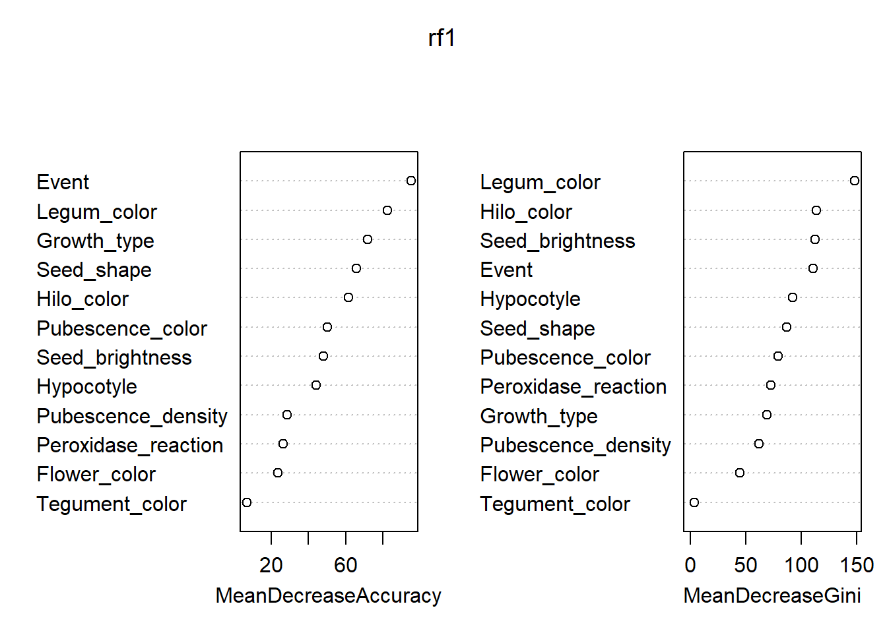
imp$traitnames <- rownames(imp)
imp_trait <- melt(imp, id.var = "traitnames")
imp_trait$traitnames <- as.factor(imp_trait$traitnames)
levels(imp_trait$traitnames) <- c(
"Event Type",
"Flower Color",
"Growth Type",
"Hilo Color",
"Hypocotyl",
"Legum Color",
"Peroxidase Reaction",
"Pubescence Color",
"Pubescence Density",
"Seed Brightness",
"Seed Shape",
"Tegument Color"
)imp_trait %>%
mutate(traitnames = fct_reorder(traitnames, value)) %>%
ggplot(aes(x = traitnames, y = value)) +
geom_point(aes(colour = variable, shape = variable), size = 4) +
scale_colour_discrete(labels = c("Accuracy", "Gini Indice")) +
scale_shape_discrete(labels = c("Accuracy", "Gini Indice")) +
geom_segment(aes(
x = traitnames,
xend = traitnames,
y = 0,
yend = value
)) +
ylab("Increase in node purity") +
xlab("") +
theme_minimal() +
theme(
legend.position = c(0.8, 0.15),
legend.title = element_blank(),
legend.background = element_rect(fill = "white", colour = "black"),
legend.key.size = unit(0.5, "cm"),
axis.text.y = element_text(
angle = 15,
vjust = 0.5,
hjust = 1
)
) +
coord_flip()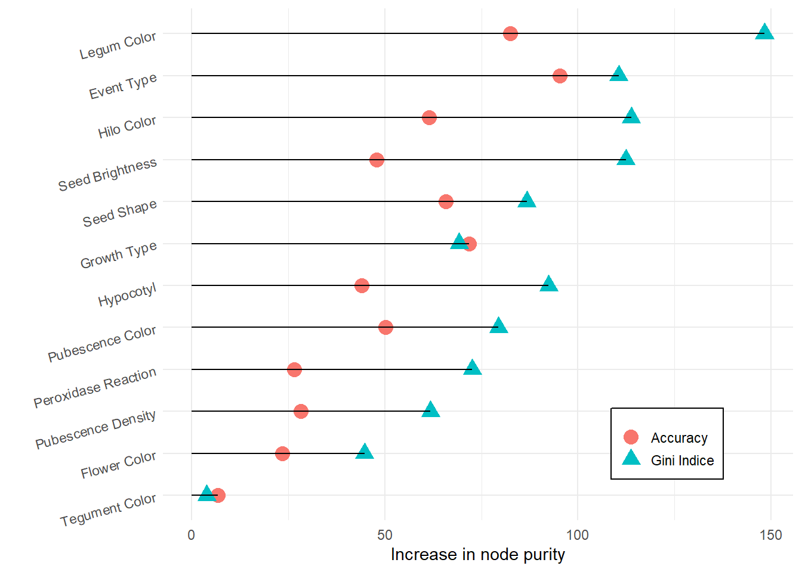
x <- imp_trait %>% group_by(traitnames) %>%
summarise(value = mean(value)) %>%
slice_min(value, n = 4, with_ties = FALSE) %>%
ungroup()
colnames(data) <- c(
"Maintainer_coded",
"Event Type",
"Flower Color",
"Legum Color",
"Seed Shape",
"Tegument Color",
"Hypocotyl",
"Pubescence Color",
"Pubescence Density",
"Hilo Color",
"Peroxidase Reaction",
"Growth Type",
"Seed Brightness"
)
data <-
data %>% select(!any_of(x$traitnames)) #tegument color, flower color, peroxidase reaction, and peroxidaseres.mca <- MCA(data,
quali.sup = 1,
graph = FALSE,
ncp = 54)eig.val <- get_eigenvalue(res.mca)
eig.val eigenvalue variance.percent cumulative.variance.percent
Dim.1 0.402480476 5.96267372 5.962674
Dim.2 0.284778036 4.21893386 10.181608
Dim.3 0.270253673 4.00375812 14.185366
Dim.4 0.203433768 3.01383360 17.199199
Dim.5 0.187328114 2.77523131 19.974431
Dim.6 0.184031980 2.72639971 22.700830
Dim.7 0.167652926 2.48374705 25.184577
Dim.8 0.162517355 2.40766453 27.592242
Dim.9 0.152768789 2.26324131 29.855483
Dim.10 0.151812314 2.24907132 32.104555
Dim.11 0.148000840 2.19260504 34.297160
Dim.12 0.144838569 2.14575658 36.442916
Dim.13 0.143065848 2.11949404 38.562410
Dim.14 0.140373737 2.07961091 40.642021
Dim.15 0.139461100 2.06609037 42.708111
Dim.16 0.136846878 2.02736115 44.735473
Dim.17 0.134072117 1.98625359 46.721726
Dim.18 0.131163553 1.94316375 48.664890
Dim.19 0.128359156 1.90161712 50.566507
Dim.20 0.127350293 1.88667100 52.453178
Dim.21 0.126977040 1.88114133 54.334319
Dim.22 0.125921907 1.86550973 56.199829
Dim.23 0.125356705 1.85713638 58.056966
Dim.24 0.125303122 1.85634254 59.913308
Dim.25 0.124671194 1.84698065 61.760289
Dim.26 0.123799723 1.83406997 63.594359
Dim.27 0.122764633 1.81873531 65.413094
Dim.28 0.121421046 1.79883032 67.211924
Dim.29 0.120260820 1.78164178 68.993566
Dim.30 0.117533062 1.74123054 70.734797
Dim.31 0.115027236 1.70410720 72.438904
Dim.32 0.114202013 1.69188168 74.130785
Dim.33 0.111507893 1.65196878 75.782754
Dim.34 0.109699995 1.62518511 77.407939
Dim.35 0.108166876 1.60247224 79.010412
Dim.36 0.106518586 1.57805313 80.588465
Dim.37 0.105464112 1.56243129 82.150896
Dim.38 0.101919534 1.50991903 83.660815
Dim.39 0.099461844 1.47350881 85.134324
Dim.40 0.097671687 1.44698795 86.581312
Dim.41 0.094878115 1.40560170 87.986914
Dim.42 0.093241012 1.38134833 89.368262
Dim.43 0.088330043 1.30859323 90.676855
Dim.44 0.082579662 1.22340241 91.900257
Dim.45 0.078630285 1.16489312 93.065151
Dim.46 0.074562314 1.10462688 94.169777
Dim.47 0.071196443 1.05476212 95.224540
Dim.48 0.065856898 0.97565775 96.200197
Dim.49 0.063338828 0.93835301 97.138550
Dim.50 0.056963360 0.84390163 97.982452
Dim.51 0.054646507 0.80957788 98.792030
Dim.52 0.052252523 0.77411146 99.566141
Dim.53 0.025303341 0.37486431 99.941006
Dim.54 0.003982118 0.05899435 100.000000eig.val <-
as.data.frame(eig.val) #creating data frame with eigenvalues
eig.val$Dimension <-
as.numeric(str_replace(rownames(eig.val), "Dim.", ""))ggplot(data = eig.val, aes(x = Dimension, y = (cumulative.variance.percent))) +
geom_bar(stat = "identity", fill = "#00AFBB", alpha = 0.5) +
geom_point(colour = "#FC4E07") +
geom_line(colour = "#FC4E07") +
scale_x_continuous(breaks = c(1:nrow(eig.val)), expand = c(0.01, 0)) +
scale_y_continuous(expand = expansion(mult = c(0, .05))) +
theme_bw() +
labs(x = "Dimensions",
y = "Cumulative variance percent")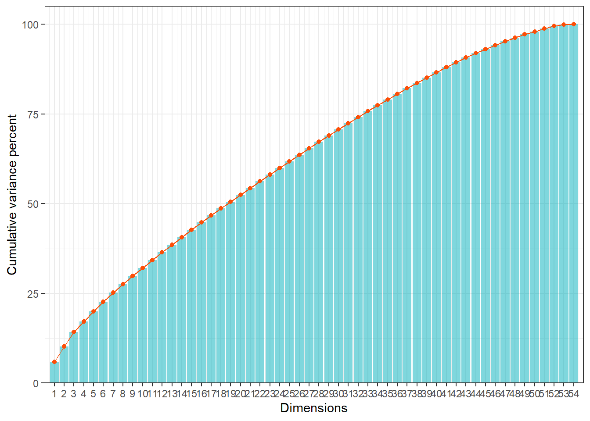
# Network topology and parameters
map_dimension = 4
n_iterations = 2000
recalculate_map = T
recalculate_no_clusters = T
#Kohonen SOM
som_grid = kohonen::somgrid(
xdim = map_dimension,
ydim = map_dimension,
topo = "hexagonal",
toroidal = FALSE
)
b <- res.mca[["quali.sup"]][["coord"]] #COORDINATES OF THE MAINTAINERS IN THE 54 DIMENSIONSset.seed(123) #Seed for reproduction of results
m = kohonen::supersom(
scale(b),
grid = som_grid,
rlen = n_iterations,
alpha = c(0.05, 0.01),
dist.fcts = 'euclidean'
)progress <- as.data.frame(cbind(m$changes, 1:nrow(m$changes)))
colnames(progress) <- c("Mean distance to closest unit", "Iteration")
ggplot(progress, aes(Iteration, progress[[1]])) +
geom_line(color = "#00AFBB", size = 1) +
stat_smooth(color = "#FC4E07",
fill = "#FC4E07",
method = "loess") +
theme_minimal() +
labs(y = colnames(progress[1]))Warning: Use of `progress[[1]]` is discouraged. Use `.data[[1]]` instead.
Use of `progress[[1]]` is discouraged. Use `.data[[1]]` instead.`geom_smooth()` using formula 'y ~ x'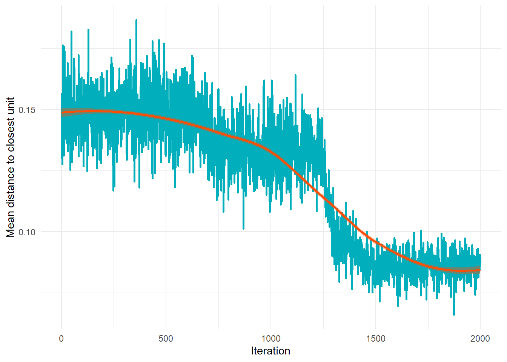
grouping <- as_tibble(cbind(m$unit.classif, rownames(b)))Warning: The `x` argument of `as_tibble.matrix()` must have unique column names if `.name_repair` is omitted as of tibble 2.0.0.
Using compatibility `.name_repair`.
This warning is displayed once every 8 hours.
Call `lifecycle::last_lifecycle_warnings()` to see where this warning was generated.colnames(grouping) <- c("group", "Maintainer_coded")
grouping$group <- as.factor(grouping$group)
grouping$Maintainer_coded <- as.factor(grouping$Maintainer_coded)
data <- data %>% left_join(grouping)Joining, by = "Maintainer_coded"som_coord <- m[[4]]$pts %>%
as_tibble %>%
mutate(group = as.integer(row_number()))
som_pts <- tibble(group = as.integer(m[[2]]),
dist = m[[3]])
ndist <- unit.distances(m$grid)
cddist <- as.matrix(object.distances(m, type = "codes"))
cddist[abs(ndist - 1) > .001] <- NA
neigh.dists <- colMeans(cddist, na.rm = TRUE)
som_coord <- som_coord %>% mutate(dist = neigh.dists)
neigdists <- som_coord %>%
ggplot(aes(x0 = x, y0 = y)) +
geom_regon(aes(
r = 0.5,
angle = 11,
sides = 6,
fill = dist
),
expand = unit(0.1, 'cm')) +
scale_fill_gradient(low = "red", high = "yellow", name = "Distance") +
theme(
panel.background = element_blank(),
axis.ticks = element_blank(),
panel.grid = element_blank(),
axis.text = element_blank(),
axis.title = element_blank(),
legend.position = "bottom"
) +
geom_text_repel(
data = som_coord,
aes(x = x, y = y, label = group),
hjust = 0.5,
force = 0,
color = "black",
show.legend = FALSE,
segment.color = NA
)
neigdists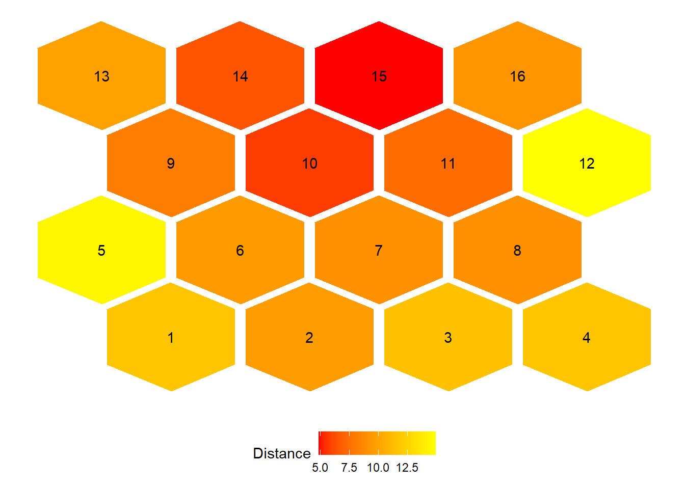
p <- som_coord %>%
ggplot(aes(x0 = x, y0 = y)) +
geom_regon(aes(
r = 0.5,
angle = 11,
sides = 6,
fill = factor(group)
),
expand = unit(0.1, 'cm')) +
theme(
panel.background = element_blank(),
axis.ticks = element_blank(),
panel.grid = element_blank(),
axis.text = element_blank(),
axis.title = element_blank(),
legend.position = "none"
) +
scale_fill_manual(values = col_vector[40:56])
plotdata <- data %>%
group_by(group, Maintainer_coded) %>%
summarize(n = n()) %>%
mutate(pct = (n / sum(n)),
lbl = scales::percent(pct)) %>%
ungroup()`summarise()` has grouped output by 'group'. You can override using the
`.groups` argument.plotdata$group <- as.integer(levels(plotdata$group))[plotdata$group]
plotdata <- plotdata %>% left_join(som_coord, by = "group")
plotdata <- na.omit(plotdata)
MC <- p +
geom_label_repel(
data = plotdata,
aes(x = x, y = y, label = Maintainer_coded),
max.overlaps = Inf,
box.padding = 0.1,
hjust = 0.5,
direction = "y",
color = "black",
show.legend = FALSE,
segment.color = NA
) +
geom_text(
data = plotdata,
aes(
x = x,
y = (y - 0.45),
label = group
),
color = "black",
show.legend = FALSE
) +
theme(plot.title = element_blank())
MC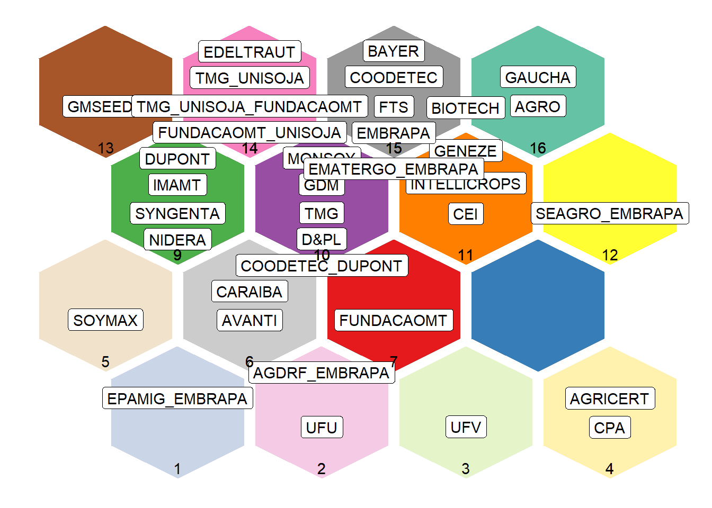
p <- som_coord %>%
ggplot(aes(x0 = x, y0 = y)) +
geom_regon(
aes(r = 0.5, angle = 11, sides = 6),
expand = unit(0.1, 'cm'),
alpha = 0,
color = "black"
) +
theme(
panel.background = element_blank(),
axis.ticks = element_blank(),
panel.grid = element_blank(),
axis.text = element_blank(),
axis.title = element_blank(),
legend.position = "bottom"
)
plotdata <- data %>%
group_by(group, `Event Type`) %>%
summarize(n = n()) %>%
mutate(pct = (n / sum(n)),
lbl = scales::percent(pct)) %>%
ungroup()`summarise()` has grouped output by 'group'. You can override using the
`.groups` argument.plotdata$group <- as.integer(levels(plotdata$group))[plotdata$group]
plotdata <- plotdata %>% left_join(som_coord, by = "group")
plotdata <- na.omit(plotdata)
levels(plotdata$`Event Type`) <-
c(
"Conventional",
"CV127",
"Intacta™ Roundup Ready™ 2 Pro",
"Liberty Link",
"Roundup Ready"
)
EV <- p +
geom_arc_bar(
data = plotdata,
aes(
x0 = x,
y0 = y,
r0 = 0,
r = 0.4,
amount = n,
fill = `Event Type`
),
stat = 'pie',
alpha = 0.8
) +
scale_fill_manual(values = col_vector[1:5]) +
geom_text(
data = plotdata,
aes(
x = x,
y = (y - 0.45),
label = group
),
color = "black",
show.legend = FALSE
) +
theme(plot.title = element_blank(), legend.title = element_blank())
EV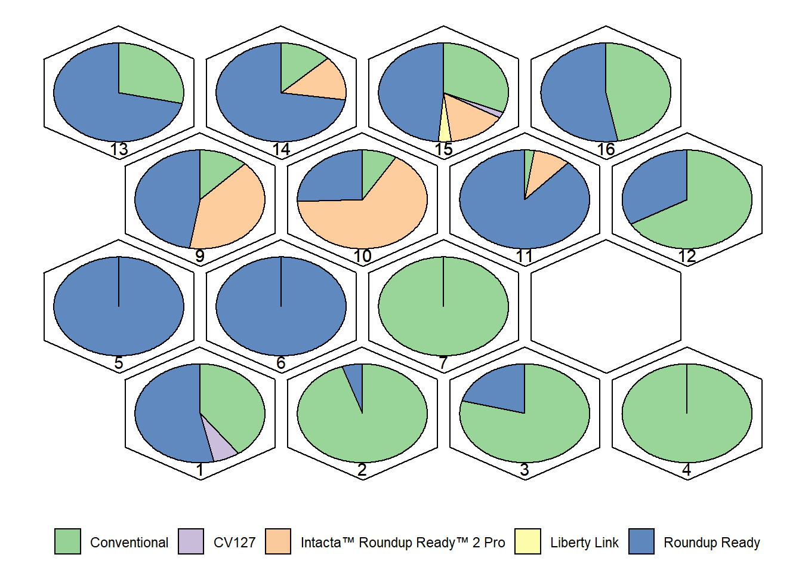
plotdata <- data %>%
group_by(group, `Legum Color`) %>%
summarize(n = n()) %>%
mutate(pct = (n / sum(n)),
lbl = scales::percent(pct)) %>%
ungroup()`summarise()` has grouped output by 'group'. You can override using the
`.groups` argument.plotdata$group <- as.integer(levels(plotdata$group))[plotdata$group]
plotdata <- plotdata %>% left_join(som_coord, by = "group")
plotdata <- na.omit(plotdata)
levels(plotdata$`Legum Color`) <-
c(
"Brown",
"Clear",
"Dark Brown",
"Dark Gray",
"Gray",
"Light Brown",
"Light Gray",
"Medium Brown"
)
CL <- p +
geom_arc_bar(
data = plotdata,
aes(
x0 = x,
y0 = y,
r0 = 0,
r = 0.4,
amount = n,
fill = `Legum Color`
),
stat = 'pie',
alpha = 0.8
) +
scale_fill_manual(values = col_vector[6:13]) +
geom_text(
data = plotdata,
aes(
x = x,
y = (y - 0.45),
label = group
),
color = "black",
show.legend = FALSE
) +
theme(plot.title = element_blank(), legend.title = element_blank())
CL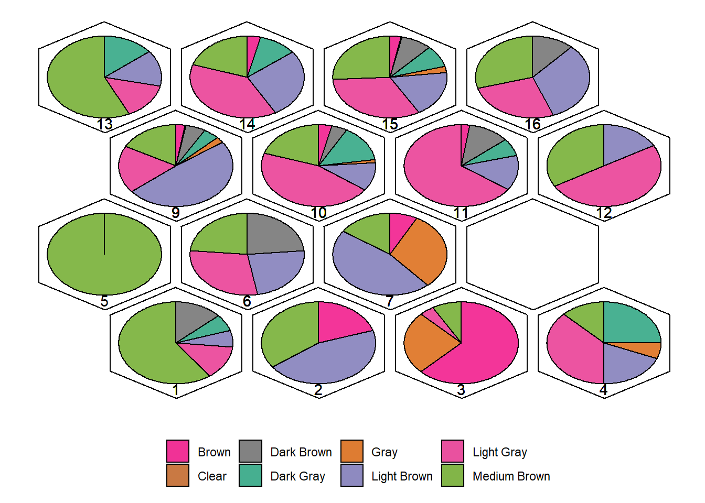
plotdata <- data %>%
group_by(group, `Seed Shape`) %>%
summarize(n = n()) %>%
mutate(pct = (n / sum(n)),
lbl = scales::percent(pct)) %>%
ungroup()`summarise()` has grouped output by 'group'. You can override using the
`.groups` argument.plotdata$group <- as.integer(levels(plotdata$group))[plotdata$group]
plotdata <- plotdata %>% left_join(som_coord, by = "group")
plotdata <- na.omit(plotdata)
levels(plotdata$`Seed Shape`) <- c(
"Elongated flat",
"Elongated spherical",
"Spherical flat",
"Ovulated spherical",
"Round",
"Rounded",
"Spherical",
"Elongated"
)
FS <- p +
geom_arc_bar(
data = plotdata,
aes(
x0 = x,
y0 = y,
r0 = 0,
r = 0.4,
amount = n,
fill = `Seed Shape`
),
stat = 'pie',
alpha = 0.8
) +
scale_fill_manual(values = col_vector[14:21]) +
geom_text(
data = plotdata,
aes(
x = x,
y = (y - 0.45),
label = group
),
color = "black",
show.legend = FALSE
) +
theme(plot.title = element_blank(), legend.title = element_blank())
FS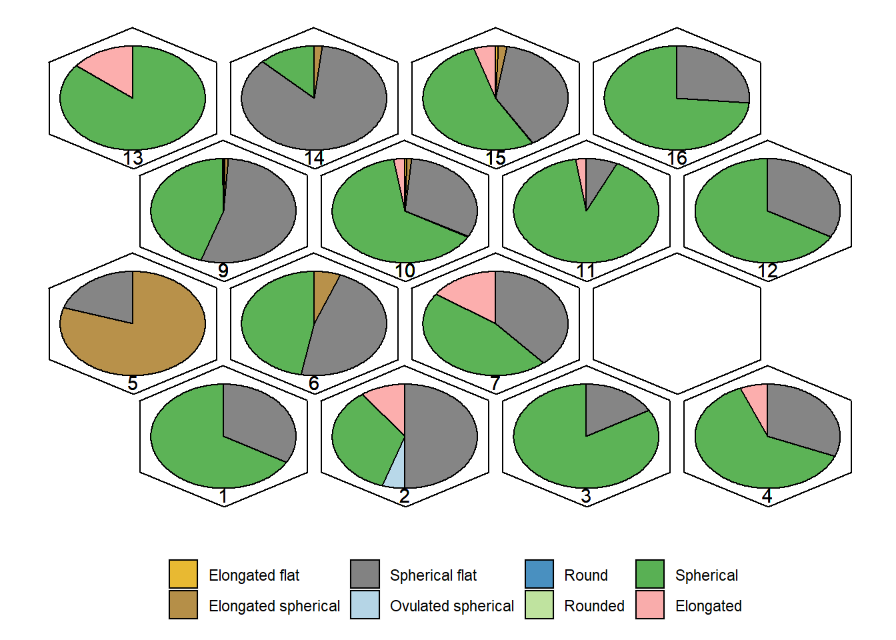
plotdata <- data %>%
group_by(group, Hypocotyl) %>%
summarize(n = n()) %>%
mutate(pct = (n / sum(n)),
lbl = scales::percent(pct)) %>%
ungroup()`summarise()` has grouped output by 'group'. You can override using the
`.groups` argument.plotdata$group <- as.integer(levels(plotdata$group))[plotdata$group]
plotdata <- plotdata %>% left_join(som_coord, by = "group")
plotdata <- na.omit(plotdata)
levels(plotdata$Hypocotyl) <- c(
"Ausente",
"Ausente/green",
"Presente",
"Presente/green",
"Presente/white",
"Presente/bronze" ,
"Presente/purple"
)
HI <- p +
geom_arc_bar(
data = plotdata,
aes(
x0 = x,
y0 = y,
r0 = 0,
r = 0.4,
amount = n,
fill = Hypocotyl
),
stat = 'pie',
alpha = 0.8
) +
scale_fill_manual(values = col_vector[22:28]) +
geom_text(
data = plotdata,
aes(
x = x,
y = (y - 0.45),
label = group
),
color = "black",
show.legend = FALSE
) +
theme(plot.title = element_blank(), legend.title = element_blank())
HI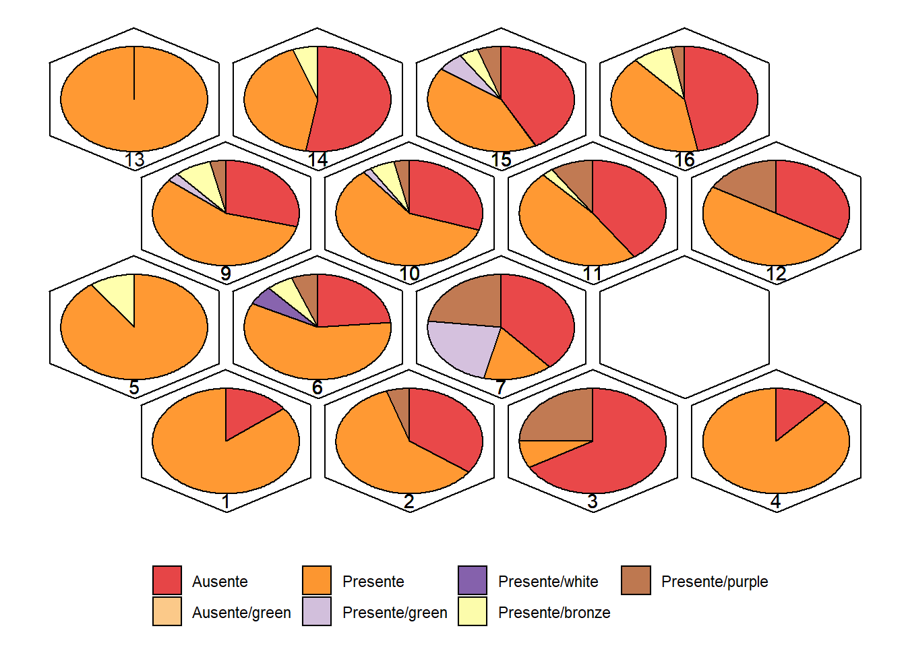
plotdata <- data %>%
group_by(group, `Pubescence Color`) %>%
summarize(n = n()) %>%
mutate(pct = (n / sum(n)),
lbl = scales::percent(pct)) %>%
ungroup()`summarise()` has grouped output by 'group'. You can override using the
`.groups` argument.plotdata$group <- as.integer(levels(plotdata$group))[plotdata$group]
plotdata <- plotdata %>% left_join(som_coord, by = "group")
plotdata <- na.omit(plotdata)
levels(plotdata$`Pubescence Color`) <-
c("Average",
"Brown",
"Dark Brown",
"Gray",
"Light Brown",
"Light Gray",
"Medium Brown")
CP <- p +
geom_arc_bar(
data = plotdata,
aes(
x0 = x,
y0 = y,
r0 = 0,
r = 0.4,
amount = n,
fill = `Pubescence Color`
),
stat = 'pie',
alpha = 0.8
) +
scale_fill_manual(values = col_vector[29:35]) +
geom_text(
data = plotdata,
aes(
x = x,
y = (y - 0.45),
label = group
),
color = "black",
show.legend = FALSE
) +
theme(plot.title = element_blank(), legend.title = element_blank())
CP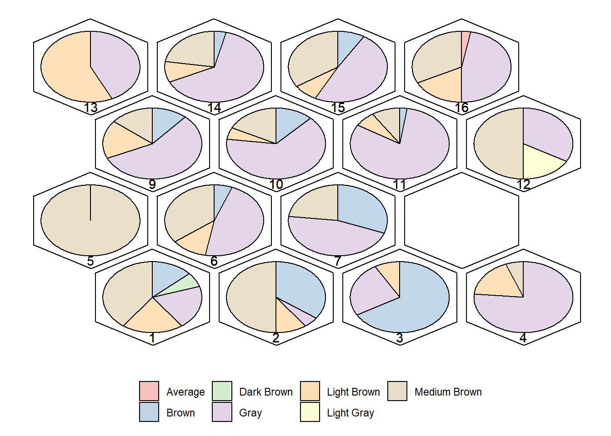
plotdata <- data %>%
group_by(group, `Hilo Color`) %>%
summarize(n = n()) %>%
mutate(pct = (n / sum(n)),
lbl = scales::percent(pct)) %>%
ungroup()`summarise()` has grouped output by 'group'. You can override using the
`.groups` argument.plotdata$group <- as.integer(levels(plotdata$group))[plotdata$group]
plotdata <- plotdata %>% left_join(som_coord, by = "group")
plotdata <- na.omit(plotdata)
levels(plotdata$`Hilo Color`) <-
c(
"Black",
"Brown",
"Dark Brown",
"Faded Black",
"Gray",
"Imperfect Black",
"Light Brown",
"Medium Brown",
"Yellow"
)
CH <- p +
geom_arc_bar(
data = plotdata,
aes(
x0 = x,
y0 = y,
r0 = 0,
r = 0.4,
amount = n,
fill = `Hilo Color`
),
stat = 'pie',
alpha = 0.8
) +
scale_fill_manual(values = col_vector[36:44]) +
geom_text(
data = plotdata,
aes(
x = x,
y = (y - 0.45),
label = group
),
color = "black",
show.legend = FALSE
) +
theme(plot.title = element_blank(), legend.title = element_blank())
CH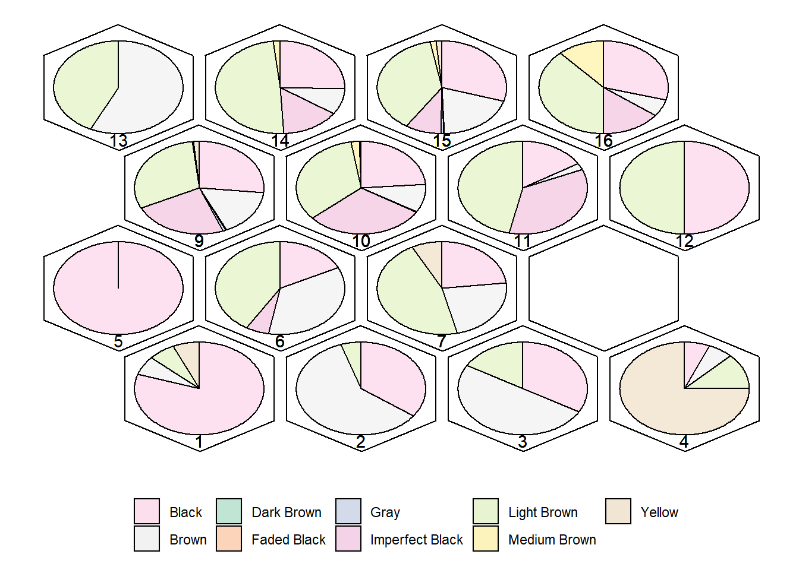
plotdata <- data %>%
group_by(group, `Growth Type`) %>%
summarize(n = n()) %>%
mutate(pct = (n / sum(n)),
lbl = scales::percent(pct)) %>%
ungroup()`summarise()` has grouped output by 'group'. You can override using the
`.groups` argument.plotdata$group <- as.integer(levels(plotdata$group))[plotdata$group]
plotdata <- plotdata %>% left_join(som_coord, by = "group")
plotdata <- na.omit(plotdata)
levels(plotdata$`Growth Type`) <- c("Determined",
"Undetermined",
"Semi-determined")
TC <- p +
geom_arc_bar(
data = plotdata,
aes(
x0 = x,
y0 = y,
r0 = 0,
r = 0.4,
amount = n,
fill = `Growth Type`
),
stat = 'pie',
alpha = 0.8
) +
scale_fill_manual(values = col_vector[45:47]) +
geom_text(
data = plotdata,
aes(
x = x,
y = (y - 0.45),
label = group
),
color = "black",
show.legend = FALSE
) +
theme(plot.title = element_blank(), legend.title = element_blank())
TC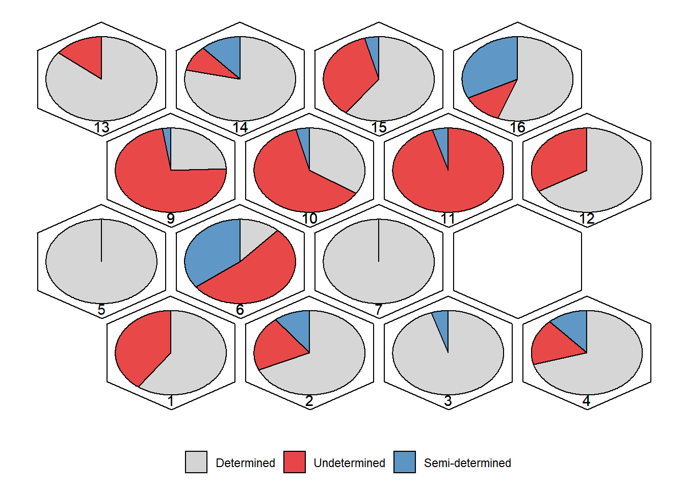
plotdata <- data %>%
group_by(group, `Seed Brightness`) %>%
summarize(n = n()) %>%
mutate(pct = (n / sum(n)),
lbl = scales::percent(pct)) %>%
ungroup()`summarise()` has grouped output by 'group'. You can override using the
`.groups` argument.plotdata$group <- as.integer(levels(plotdata$group))[plotdata$group]
plotdata <- plotdata %>% left_join(som_coord, by = "group")
plotdata <- na.omit(plotdata)
levels(plotdata$`Seed Brightness`) <-
c("Average",
"Bright",
"Shiny",
"High",
"Low",
"Low/Average",
"Matte" ,
"Opaque")
BS <- p +
geom_arc_bar(
data = plotdata,
aes(
x0 = x,
y0 = y,
r0 = 0,
r = 0.4,
amount = n,
fill = `Seed Brightness`
),
stat = 'pie',
alpha = 0.8
) +
scale_fill_manual(values = col_vector[48:55]) +
geom_text(
data = plotdata,
aes(
x = x,
y = (y - 0.45),
label = group
),
color = "black",
show.legend = FALSE
) +
theme(plot.title = element_blank(), legend.title = element_blank())
BS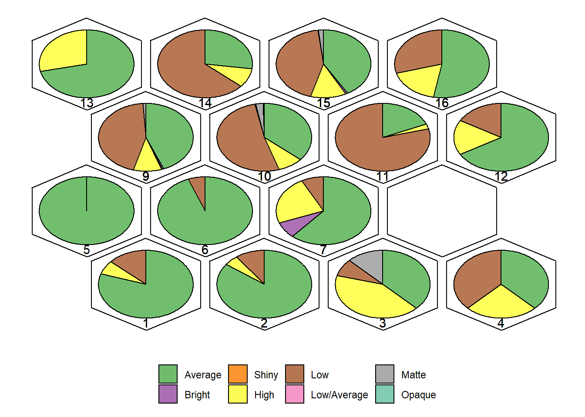
yield <- read_excel("data/yield.xlsx")
data <- read_excel("data/data.xlsx")
#Transforming variables into factors
yield$Year <- as.factor(yield$Year)
for (i in 1:ncol(data)) {
data[[i]] = as.factor(data[[i]])
}
# Count graph relating event to year
levels(data$Event) <-
c(
"Conventional",
"CV127",
"Intacta™ Roundup Ready™ 2 Pro",
"Liberty Link",
"Roundup Ready"
)
ggplot() +
geom_bar(data = data, aes(Year, fill = Event)) +
geom_point(data = yield,
aes(x = Year, y = (Yield * (175 / 125000))),
group = 1,
color = "#a50026") +
geom_line(
data = yield,
aes(x = Year, y = Yield * (175 / 125000)),
group = 1,
color = "#a50026"
) +
scale_y_continuous(name = "Count",
sec.axis = sec_axis( ~ . * 125000 / 175, name = "Yield (Thousand Tons)")) +
theme_bw() +
xlab("Year") +
scale_fill_brewer(palette = "Dark2") +
labs(fill = "Event Type") +
theme(
legend.position = c(0.125, 0.85),
legend.background = element_rect(fill = "white", colour = "black")
)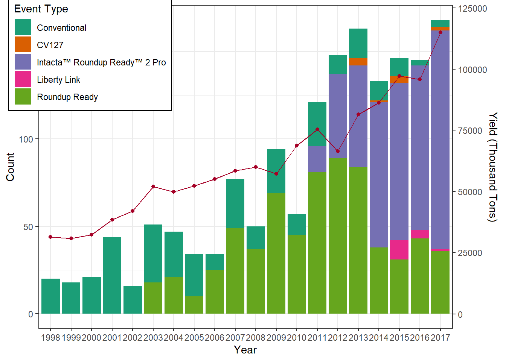
# Count graph relating Growth type to year
levels(data$Growth_type) <- c("Determined",
"Undetermined",
"Semi-determined")
data %>%
filter(Growth_type != "NA") %>%
ggplot() +
geom_bar(aes(Year, fill = Growth_type)) +
theme_bw() +
xlab("Year") +
ylab("Count") +
scale_fill_brewer(palette = "Set1") +
labs(fill = "Growth type") +
theme(
legend.position = c(0.125, 0.85),
legend.background = element_rect(fill = "white", colour = "black")
)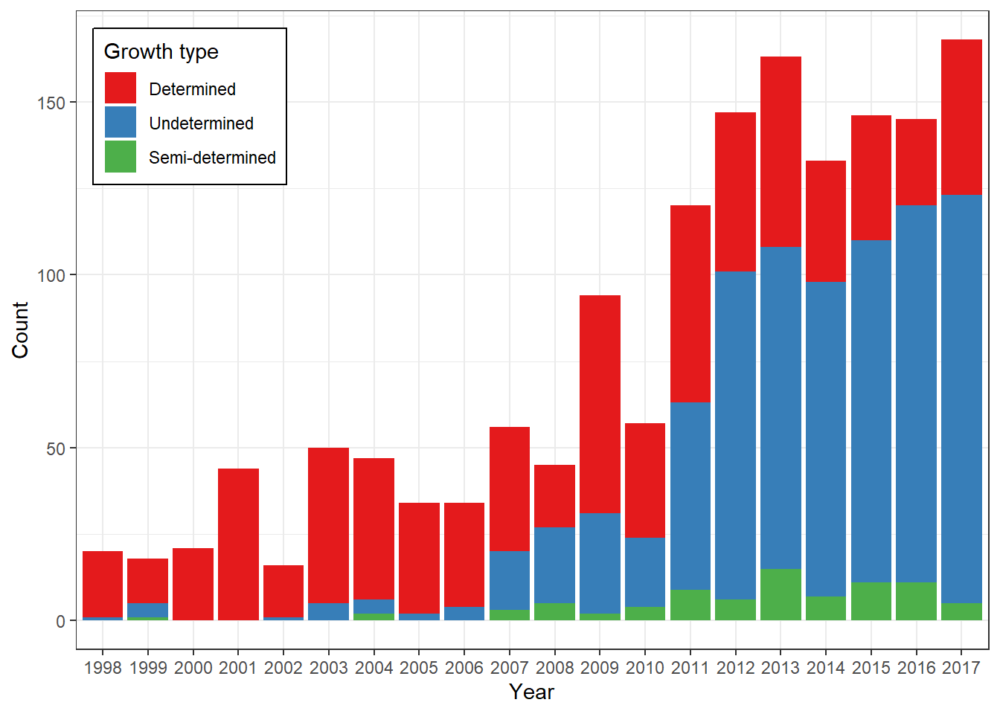
sessionInfo()R version 4.1.3 (2022-03-10)
Platform: x86_64-w64-mingw32/x64 (64-bit)
Running under: Windows 10 x64 (build 19042)
Matrix products: default
locale:
[1] LC_COLLATE=Portuguese_Brazil.1252 LC_CTYPE=Portuguese_Brazil.1252
[3] LC_MONETARY=Portuguese_Brazil.1252 LC_NUMERIC=C
[5] LC_TIME=Portuguese_Brazil.1252
attached base packages:
[1] stats graphics grDevices utils datasets methods base
other attached packages:
[1] gridExtra_2.3 ggrepel_0.9.1 RColorBrewer_1.1-3 kohonen_3.0.11
[5] ggforce_0.3.3 reshape2_1.4.4 magrittr_2.0.3 forcats_0.5.1
[9] stringr_1.4.0 dplyr_1.0.9 purrr_0.3.4 readr_2.1.2
[13] tidyr_1.2.0 tibble_3.1.7 tidyverse_1.3.1 randomForest_4.7-1
[17] readxl_1.4.0 factoextra_1.0.7 ggplot2_3.3.5 FactoMineR_2.4
loaded via a namespace (and not attached):
[1] nlme_3.1-157 fs_1.5.2 lubridate_1.8.0
[4] httr_1.4.2 rprojroot_2.0.3 tools_4.1.3
[7] backports_1.4.1 bslib_0.3.1 utf8_1.2.2
[10] R6_2.5.1 DT_0.22 mgcv_1.8-40
[13] DBI_1.1.2 colorspace_2.0-3 withr_2.5.0
[16] tidyselect_1.1.2 compiler_4.1.3 git2r_0.30.1
[19] cli_3.2.0 rvest_1.0.2 flashClust_1.01-2
[22] xml2_1.3.3 labeling_0.4.2 sass_0.4.1
[25] scales_1.2.0 digest_0.6.29 rmarkdown_2.13
[28] pkgconfig_2.0.3 htmltools_0.5.2 highr_0.9
[31] dbplyr_2.1.1 fastmap_1.1.0 htmlwidgets_1.5.4
[34] rlang_1.0.2 rstudioapi_0.13 jquerylib_0.1.4
[37] generics_0.1.2 farver_2.1.0 jsonlite_1.8.0
[40] leaps_3.1 Matrix_1.4-1 Rcpp_1.0.8.3
[43] munsell_0.5.0 fansi_1.0.3 lifecycle_1.0.1
[46] scatterplot3d_0.3-41 stringi_1.7.6 whisker_0.4
[49] yaml_2.3.5 MASS_7.3-56 plyr_1.8.7
[52] grid_4.1.3 promises_1.2.0.1 crayon_1.5.1
[55] lattice_0.20-45 splines_4.1.3 haven_2.4.3
[58] hms_1.1.1 knitr_1.38 pillar_1.7.0
[61] reprex_2.0.1 glue_1.6.2 evaluate_0.15
[64] modelr_0.1.8 vctrs_0.4.1 tzdb_0.3.0
[67] tweenr_1.0.2 httpuv_1.6.5 cellranger_1.1.0
[70] gtable_0.3.0 polyclip_1.10-0 assertthat_0.2.1
[73] xfun_0.30 broom_0.7.12 later_1.3.0
[76] workflowr_1.7.0 cluster_2.1.2 ellipsis_0.3.2